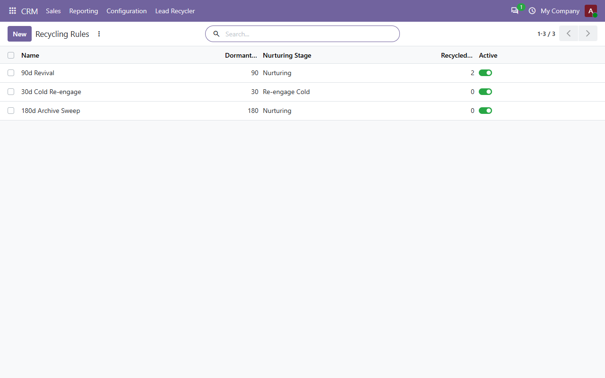
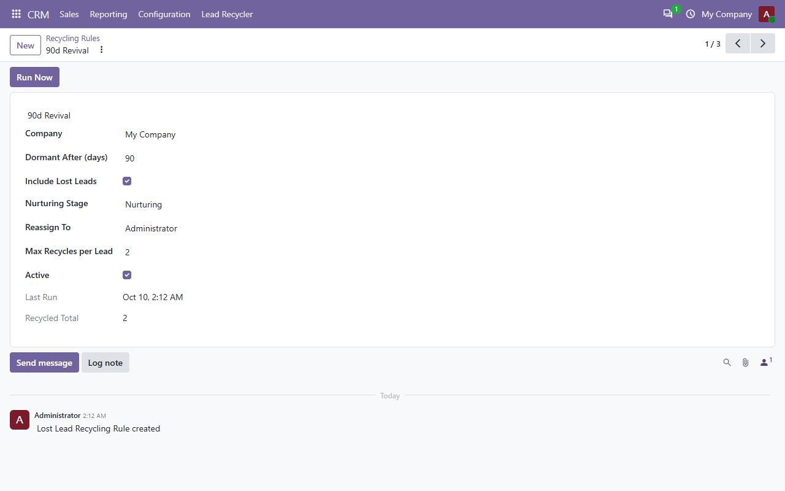
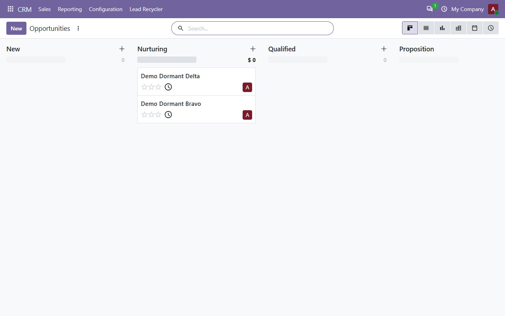

Stop letting 20-30% of your pipeline rot. Automatically detect lost or dormant opportunities, bring them back to nurturing, reassign them and log every recycling cycle.

Recycling rules with inactivity window, stage and reassignment
Most CRM reports measure what just closed, not what quietly died three months ago. This module recovers the forgotten 20-30%.
Define how long a lead may sit untouched, where it goes when recycled, and who picks it up. Run the rules manually or let the weekly cron do it.

In the screenshot below, two archived opportunities were revived by the 90-day rule and pushed back into the pipeline under the Nurturing stage, with their recycling cycle recorded on the lead.

No add-ons, no hidden costs. All features are included in one module.
English · Français · Español · Deutsch · Português
| Odoo Version | 18.0 (Community & Enterprise) |
| License | OPL-1 (Odoo Proprietary) |
| Dependencies | base, mail, crm |
| Tests | 3 automated tests pass |
1. Install → 2. Create a Nurturing stage and a rule → 3. Run now, or let the weekly cron work.
Purchase includes full support, bug fixes, and updates. We respond quickly and take pride in helping every customer get the most out of Lost Lead Recycler.